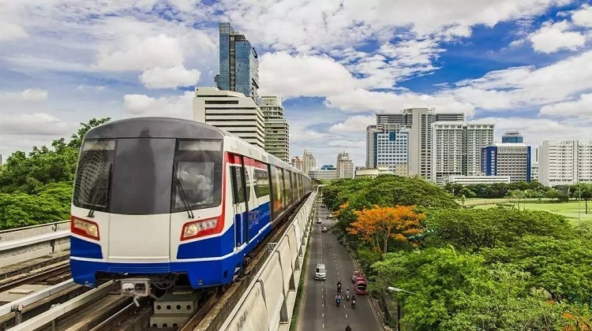

地铁
曼谷的轨道交通分为轻轨（BTS）和地铁（MRT）两种。
#轻轨（BTS）#
轻轨是曼谷最热门也是最舒服的交通工具，总共有两条线：深绿色的是隆线（Silom Line），从安努（On Nut）开往蒙奇（Mochit）；浅绿色的是素坤逸线（Sukhumvit Line），从沙潘塔克辛（Saphan Taksin）开往国家运动（National Stadium），两条线在暹罗（Siam）可以换乘。

图：曼谷轻轨
如欲取得更详尽的资料或路线图，请浏览以下官网。
开放时间：6：00-24：00
费用：15-40铢（以距离分为不同区间Zone，两站之间为1区间Zone1，票价为15铢，目前区间最远为Zone6，票价为40铢）
通票：
BTS One-Day-Pass（一日票），120铢，限购买当日使用，不可退票；
BTS Sky Smart Pass（储值卡），首次购买130铢，内含30铢押金和30铢手续费，有效期5年，没有票价折扣；
BTS 30-Day Adult Smart Pass（30天聪明卡），分15次375铢，25次580铢，35次765铢，45次930铢，内含30铢手续费。
Tips：
1.旧自动售票机只接受5铢、10铢的硬币，新触摸屏购票机可接受硬币和20铢、50铢、100铢的纸币。
2.除了单程票可在自动售票机购买外，其他的特殊票都必须在人工窗口购买。
3.告诉售票人员希望购买的车票后，对方多半直接拿出有票券图示的纸板确认，不用担心沟通问题。
4.车上让座对象除了一般的老弱妇孺，看到穿着橘色袈裟的和尚也要让座。
#地铁（MRT）#
目前曼谷的地铁只有一条线，从华南蓬火车站（Hua Lamphong Railway Station）开往邦素（Bang Sue），其中是隆（Si Lom）站可与BTS是隆线（Silom Line）换乘，素坤逸（Sukhumvit ）站和乍得乍公园（Chatuchak Park）站可与BTS素坤逸线（Sukhumvit Line）换乘。
如欲取得更详尽的资料或路线图，请浏览以下官网。
开放时间：6：00-24：00
费用：15-40铢
通票：
MRT One Day Pass（1日/3日/15日/30日券），依照天数120-1200铢。
MRT Stored Value Card（Adult Pass）储值卡，首次购买230铢，内含50铢押金和30铢手续费，有效期2年，没有票价折扣。
Tips：
1.BTS和MRT的票不是通用的，如需换乘，需要出站后重新购票再进站。
2.老人和儿童票需到人工柜台购买。
BTS和MRT的3条线路几乎横跨大部分的曼谷市区，覆盖主要景点和热闹地区，出门选择这两种交通工具即方便又快捷，线路图如下：
BTS浅绿色线为素坤逸线（Sukhumvit Line）
BTS深绿色线为是隆线（Silom Line）
华南蓬火车站（Hua Lamphong Railway Station）、蒙奇（Mochit）、素坤逸（Sukhumvit）、暹罗（Siam）为重要站点，周围有重要景点分布。

图：地铁
公共巴士
公共巴士虽然是即安全又便宜的交通工具，且车次密集，但是车次变化也很频繁，返回的路线又会跟去程的路线不一样，且泰国的数字不是用阿拉伯数字表示，有专门的泰语，初次去曼谷或不太懂泰语的朋友不建议选择乘坐公共巴士。
如果你时间充裕，想到处逛逛，也可以挑战一下曼谷的公共巴士。登陆曼谷大众运输管理路局主页，向你所住的宾馆询问交通路线，拨打184公交热线（如果你会泰语），或买一份曼谷交通图（50铢），是你决定乘坐公共巴士出行前所应做的准备。
票价：
橙色车：是最新的车型，有空调车厢空间，车票价格按照行驶距离不同而不同，起步价13铢。
蓝黄巴士/蓝色奶油色车：也是空调车，但价格比橙色车便宜一些，车票价格按照行驶距离不同而不同，前8公里11铢。
紫色车：是小巴士，有空调，统一票价。没有售票员，因此要准备好车票钱，不设找零，座位坐满情况下则不再载客，因此人人有座位。
红色车：不是空调车，车票是统一票价，但分白天和午夜两种，午夜的票价稍贵，白天为7铢，夜间加收1.5铢。
绿色车：这种车污染很大，司机开车也很“野”，应尽量避免乘坐，票价6.5铢。
白色车：不是空调车，车票是统一票价。
Tips：
曼谷的巴士是招手即停，上车后保留好票据，以备验票，下车时只需按一下车门旁的按钮。
图：公共巴士
计程车
在曼谷，的士的起步价是35泰铢，尽量避开上下班高峰时期。打车时一定要坚持按里程记价（By meter），如果你跟司机说By meter，司机开始跟你讲价时，最好换一辆，如若需要估价打车，建议市内一般100泰铢，最远的地方150泰铢。
图：出租车
三轮
TukTuk已经成为泰国的一大特色，曼谷街头随处可见，人们一见到TukTuk就会想到曼谷。在搭乘嘟嘟车时，上车前一定要事先和司机谈好价钱，如果步行需要10分钟，TukTuk价格在15-20铢，如果步行超过30分钟，TukTuk价格在50-100铢，你可以多选择几辆，谈到满意价为止。
Tips：
单身女性在夜晚出行，最好搭乘的士，避免乘坐TukTuk。
轮渡
东南亚著名的湄南河横穿曼谷市，将曼谷划分为两部分，而这条河也成了曼谷的重要枢纽，让曼谷赢得了“东方威尼斯”的美誉。
湄南河上的水上交通分为四类：
1、公交船（Chao Phraya Express Boat）：公交船是顺着河南北两个方向，一票制上传，下船要重新买票。公交船分橙线（快线）、黄线（快线）、绿线（快线）、本地线（无色，普通线）和蓝线（旅游观光专线），你可以根据你的目的地选择不同的船线。
2、船线：Central Pier为始发站，位于BTS Saphan Taksin站旁。
运行时间：周一-周五的6：00-19：00，每10-20分钟一班（周末只有橙色船）
参考价格：10-32铢
摆渡船（Cross-River Ferry）：往返于湄南河两岸的渡轮，至对岸约5分钟。通常船家会等到一定的人数才会开船，乘船地点多位于隔壁或同一码头。
参考价格：5铢
3、长尾船（Longtail Taxi）：完全是出租给游客，不过现在价格已经涨到1000铢每小时，优势是速度快而且可以去到很小的运河，包括水上市场。最高可载约15人，分为共乘制和包租制，最好不要找码头旁给拉客的船家，在Tha Chang、Tha Si Phraya等码头设有租船服务柜台有给游客办理，或找旅行社代订也行。
4、酒店穿梭渡轮：由文华东方酒店、香格里拉酒店及半岛酒店等提供的免费渡轮，可前往Central Pier、Oriental Pier、Royal Orchid Sheraton附近的购物中心。